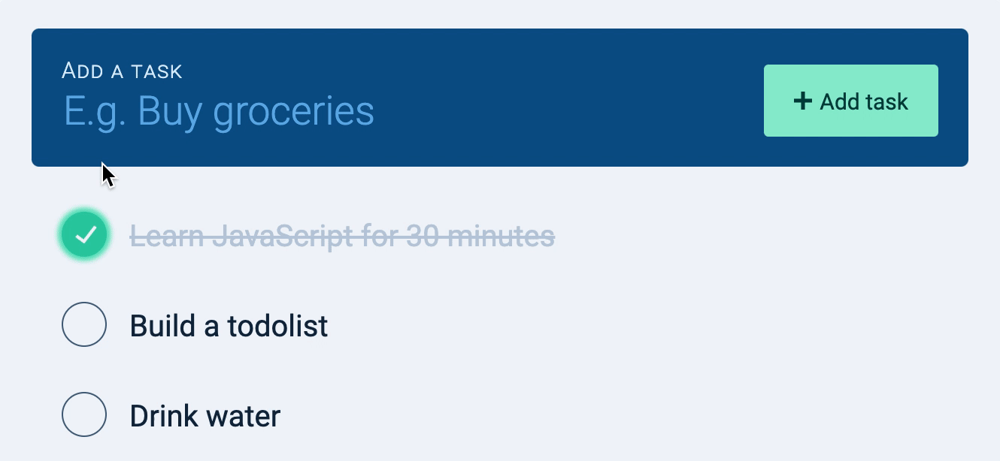
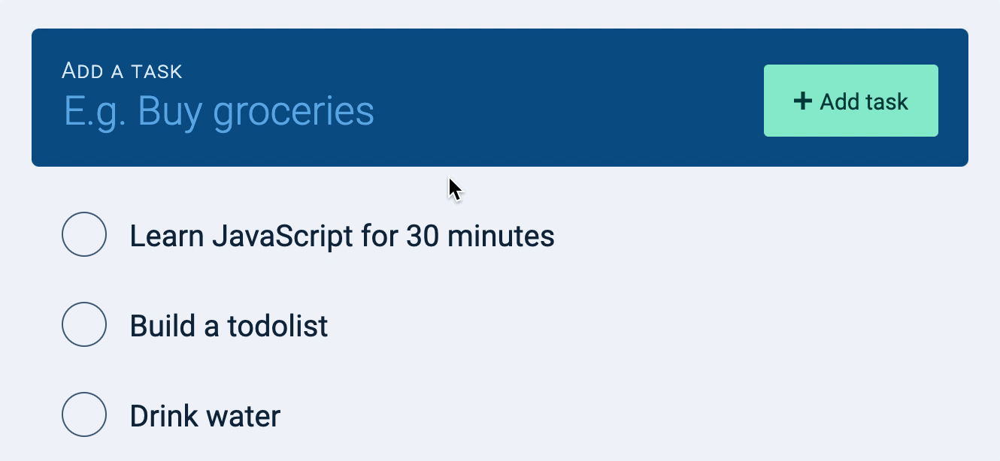
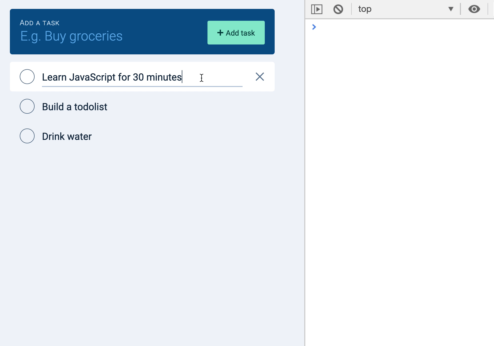

Once again, anything with Ajax creates a set of interesting challenges. (You’ll see).
Checking/unchecking a task
When a user clicks on a checkbox, we want to check the checkbox. This completes the task. We also want to save the completed task to the server.
When the checkbox is checked (or unchecked), it fires a change event. We can listen for this change event to know if the user checks a checkbox. Since there are many checkboxes, we can use an event delegation pattern.
And if you uncheck the checkbox and refresh the page, the task should be unchecked.

Editing the task name
The Todolist API lets us change the name of the task as well. If we want to allow users to change the name of the task, we need to let them edit the task in the UI first.
Allowing users to edit the task name
We can do this by changing the .task__name from a <span> element to an <input> element. (You have to style the <span> and <input> elements accordingly, but I did it for you already).
With this change, users should be able to edit a task.

Choosing an event to listen to
We have two options here. We can either update the database when
The user types into the input field
The user removes focus from the input field
The option you choose determines the event you’ll listen for:
Option 1: listen for input event
Option 2: listen for blur event
Both options have their pros and cons.
If you choose option 1, you might send too many requests to the server. (Because you’ll trigger a PUT request whenever a user types into the input field).
If you choose option 2, there’s a chance you don’t send anything to the server. (If the user types into the input field, but closes the tab immediately, the input field doesn’t lose focus, and the request doesn’t get sent).
Which should you choose?
Here, we’ll choose option 1 because sending too many requests beats not updating the database according to our users’ actions. (Also, because there’s a way to reduce the number of requests we send).
Saving the task name to the database
As before, because there are many tasks in the DOM, the best way is to use an event delegation pattern.
taskList.addEventListener('input', event => {
if (!event.target.matches('.task__name')) return
// Do something
})
To update the Todolist API, we need to know the id of the task. We can find the id from the checkbox. And we can find the checkbox by traversing upwards to the task.
Since we used the input event, we send one request every time a user edits a task. That’s a lot of requests!

We want to reduce the number of requests we send because of two reasons.
First, each request cost money for the user. Requests and responses require data. More usage of data means we make users spend more money (especially if they don’t have an unlimited data plan).
Second, each request means work for the server. If we reduce requests, servers do less work. This is why many APIs have rate-limits.
How to send fewer requests
Did you notice that requests that are sent earlier get overwritten by requests that are sent later?
Since requests that are sent earlier get overwritten, it means we only need to send out the final request. (The request when a user finished editing the task).
We know the user finished editing the task when they stop typing. The best way to tell when they stop typing is use the amount of time between keystrokes as a proxy. If the user does not type anything for an amount of time, we can assume they have stopped typing.
In code, here’s what we’ll do:
Set a timeout when a user begins typing. Let’s say we set the timeout for 1 second (1000ms).
If the user types something in the next second, we restart the timeout for another second.
If the user doesn’t type anything in the next second, we assume they stopped typing. At this point, we send the request.
The actual implementation of this timeout function is called debounce. It looks like this:
function debounce(callback, wait, immediate) {
let timeout
return function () {
const context = this
const args = arguments
const later = function () {
timeout = null
if (!immediate) callback.apply(context, args)
}
const callNow = immediate && !timeout
clearTimeout(timeout)
timeout = setTimeout(later, wait)
if (callNow) callback.apply(context, args)
}
}
Basically, debounce lets you:
Set a timer for X milliseconds.
If the debounced function gets called again within X milliseconds, restart the timer.
If X milliseconds passed and debounced function did not get called, trigger the callback.
(I won’t be explaining how to build debounce in this course. You will be able to figure it out after learning about apply and other advanced JavaScript features later).
Debounce can introduce a problem if you wait too long. In the example below, one request was sent even though three tasks were changed.
Task 1 and task 2 did not get saved. Task 3 did.
This happened because we debounced all input events on <ul>.
One way to fix the problem is to listen (and debounce) input events for each task (which means we don’t use the event delegation pattern). The downside to this approach is we have lots of event listeners.
Another way to fix the debounce problem is simply to reduce the debounce duration. In this example, I reduced the debounced duration to 250ms and all three tasks got saved.